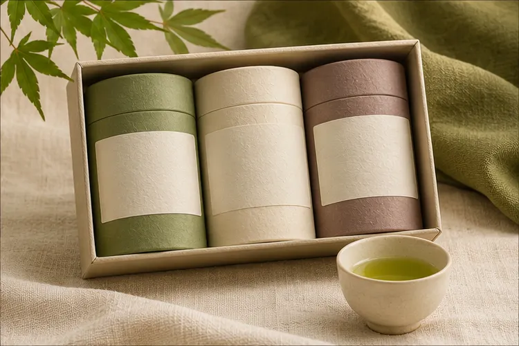

抹茶
醇厚鮮味 · 點茶、拿鐵
查看茶品宇治 月野茶房


宇治 月野茶房
Taiwan group buy
Mellow matcha, bright sencha, and toasty hojicha. Discover Tsukino Tea House through our Taiwan group buy.
Explore the group buyIn preparation
Three small portions to compare side by side, from a familiar favorite to a tea you haven’t tried.
We’ll share the price, deadline, minimum quantity, and Taiwan delivery estimate when orders open.
See what’s insideMellow umami · Whisked or in a latte
View tea details
Fresh and lightly sweet · Everyday brewing
View tea detailsToasty and light · After a meal
View tea details宇治 月野茶房